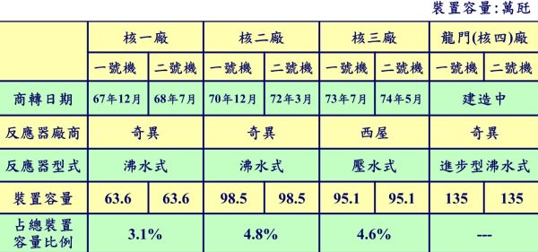
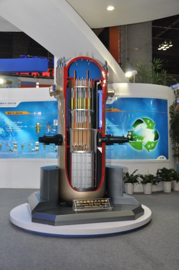

2014-09-29 04:50:00
今天（2014年九月29日），中國國家能源海洋核動力平台技術研發中心在中國船舶重工集團公司七一九所（位於武漢市）掛牌成立。此中心由中船重工七一九研究所發起，集合中國核動力研究設計院、中科華核電技術研究院有限公司、中海油研究總院等單位共同組建。這是中共首個國家級海洋核動力平台技術研發機構。两天前已有台灣媒體報導，但是内容有些偏差，主要是猜測這項“海洋核動力平台技術”將被軍用化而應用在核動力潜艇和航空母艦上。而事實是剛好相反的：軍用和民用的海洋核動力平台有本質上的不同；中共以往只有軍用核動力技術，這個新中心完全是為了開發民用版的海洋核動力而創立的。
最早的核反應堆是純粹研究用的。後來在二戦期間，美國的曼哈頓計劃為了提煉鈽（Plutonium）而開始建立大功率的反應堆。二戦結束之後，美國積極研究利用核反應堆發電的可能性，這當然是軍民两用的技術，但是資金主要來自海軍的核潜艇計劃，所以整個研究方向是由軍方主導的。當時核反應堆的設計五花八門，可是能裝在直徑不到十公尺的潜艇裡的只有一種，就是壓水式（Pressurized Water Reactor），所以它成為後來所有軍用船舶核動力的来源。既然軍方已經投入了那麼多銭把工程做出來了，民用的核電厰自然也就沿用這個設計。後來美國大部分的核電厰，尤其是西屋公司（Westinghouse）的產品，都是壓水式的。直到更晚才有了沸水式（Boiling Water Reactor），不過它與壓水式大同小異，1940和50年代的各式奇型設計大多已被人遺忘。

台灣的核電厰如同世界绝大多數的商用核反應堆一様，不是壓水式就是沸水式。台電用“萬千瓦”作單位，既有西式的千進位，也有中式的萬進位，有點不倫不類。為與下列的ACP-100做比較，核一厰的两個反應堆各有636兆瓦的功率。核二和核三則是1000兆瓦級的反應堆，是1980年代以後的第二代核電厰的主流技術。核四則用了GE最新的第三代設計，功率達到了1350兆瓦。中共最先進的CAP-1400與之有類似的功率，即1400兆瓦，不過用的是西屋的壓水式技術。
雖然軍用的壓水式設計後來也主導了民用核電市場，但是两者之間還是有一個大差别，那就是燃料棒的更換問题。民用的核電站以安全為第一考慮，其次是費用；而軍用的則以性能為第一，安全和費用都是次要的。民用的核電站空間有的是，而核潜艇裡寸土寸金。因此核電厰的燃料棒一般只有5%的鈾235（Uranium 235），大約每隔两年換一次。核潜艇不可能每两年就開膛破肚來換燃料，因此燃料棒必須能用上15（潜艇自身的半壽命）或30年（潜艇的全壽命），它的鈾235濃度就為此而高達96%。燃料的濃度差别這麼大，設計上的細節自然也就南轅北轍，無法通用。經過六十多年的發展，軍用和民用的核反應堆已經成為分别的工程體系：原理雖然相同，部件卻常常有完全不同的設計；就像視窗作業系統（Windows OS）和Windows Phone，两者都是微軟的技術，但是後者必須能塞進小小的手機裡，因而不能與電腦上的Windows通用。
中共從1960年代開始研製091級核動力潜艇，到2012年開始的095級研發計劃已經要求其軍用核反應堆設計超越俄國，完全趕上美國和法國的最新水準。在民用核能方面，美國在1979年的三哩島事故之後，其核電站建設完全停滞；而中共在過去幾年則大規模投資，引進了美日法俄四國的第三代和德國的第四代設計（即Pebble Bed Reactor；這是個很有趣的技術，我以後有空會詳述），如同高鐡技術一様，在快速消化吸收之後，已經可以出口。所以在軍用和民用核反應堆上，中共都已進入世界前列；那麼這次新成立的中國國家能源海洋核動力平台技術研發中心，到底是要研究什麼呢？其實它的研究對象，民用的核動力船隻，是一個很小的市場，目前只有破冰船有應用，當然俄國在這方面最領先，俄國人還提出了用同様的技術來建造浮動核電站的可能性。中共的經濟實力已經强大到可以面面俱到的地步，連這種小規模的工業都不願放過。在技術上，民用船隻的核反應堆的性質界於軍用反應堆和民用的陸上核電站之間，空間大於潜艇而小於核電厰，燃料棒的更换周期長於两年而短於軍用要求的15年，因而鈾235濃度在20%左右。中共剛剛開發出世界第一個商業上實用的袖珍核反應堆ACP-100，目前正在福建莆田施工興建其配套的電站，其發電功率為100兆瓦（MW），大小和一個集裝箱類似，因此可能以此為基礎，為改用中濃度燃料棒重新設計出民用船隻的核反應堆。

ACP-100的模型。它採用一體化設計，整個反應堆非常緊凑，可以塞進一個標凖的集裝箱裡；不過燃料棒還是須要两年換一次，和軍用的明顯不同。